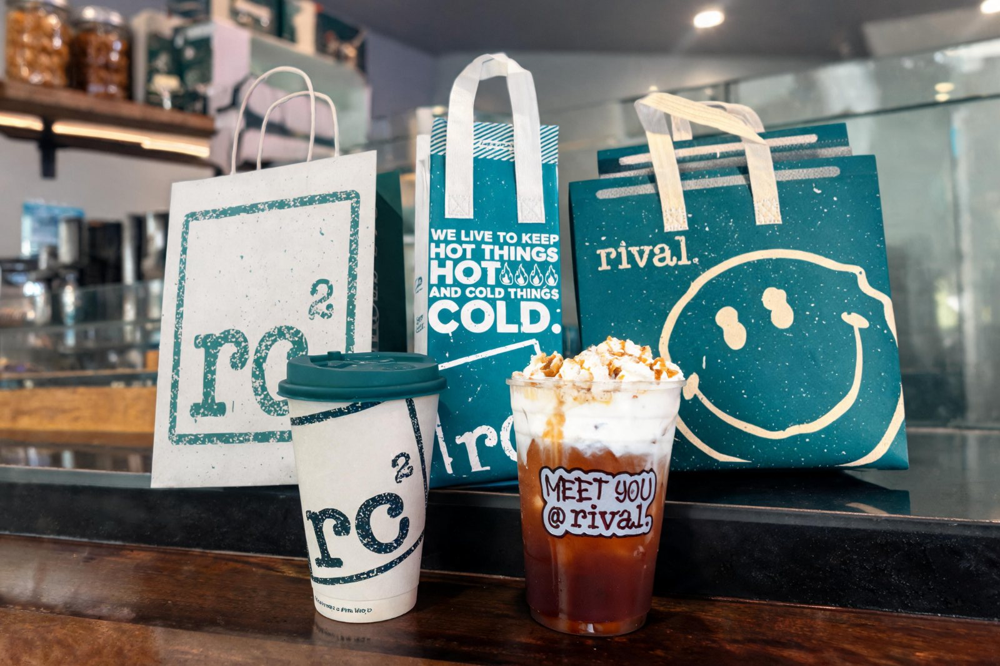

From 0 Members to a Community That Filled Listings
0 → 5K+quality members in 3 months
40K+members 17 months later
The goal
Build a Facebook community where people could ask questions, find support, and connect, while giving the client a steady source of qualified leads, prospects, and potential bookings.
The challenge
The group was starting from zero, and I was managing growth remotely from the Philippines while targeting a very specific audience in another market.
The challenge was not simply getting numbers. It was finding relevant people who would actually benefit from the community and potentially become leads.
My role
Facebook Group GrowthCommunity ManagementAudience ResearchOrganic OutreachEngagement
I handled the day-to-day growth of the community, including identifying relevant audiences, engaging within related communities, reaching out to potential members, and helping keep the group useful and active.
The strategy
I focused on quality over vanity growth.
I researched communities where the target audience was already active, identified relevant potential members, joined conversations naturally, and used organic outreach to introduce the group to people who could genuinely benefit from it.
I also helped maintain the group as a useful space, not just a promotional channel, so members had a reason to stay, engage, and recommend it to others.
The result
0 → 5K+quality members in 3 months
That initial growth became the foundation of the community. After the project ended, the group continued growing from the audience and momentum already established.
40K+members 17 months later
The community now gives the business a direct place to generate inquiries, attract prospects, and connect available listings with people actively looking for them.
The client later credited the early foundation I built as a major reason the community was able to keep growing.
What I enjoyed
The trust.
The client gave me a lot of freedom to test the strategies I believed would work best, and they were always appreciative of the results. Seeing something I helped start continue growing long after my role ended was especially rewarding.
They even offered me another role after seeing the impact of the work.
Turn one of the client's recurring messages about supporting teachers into a social post that felt authentic to her voice and strengthened her thought leadership.
The challenge
The message itself was strong, but it needed to be presented in a way that would stop the scroll, feel relatable to educators, and still sound like something the client would naturally say.
My role
Content DirectionGraphic DesignCopywritingSocial Media Management
I turned the client's idea into a branded visual, wrote the supporting caption, and prepared the post for her social channels.
The strategy
Keep the message simple, recognizable, and easy to share.
Rather than overloading the post with information, I centered it around one clear thought that reflected what the client already talks about in her work, then paired it with a visual that made the message immediately understandable.
The result
1.6Kreactions
38comments
535shares
The post reached well beyond the client's usual audience and sparked conversation among educators who connected with the message.
What I enjoyed
I enjoyed taking something the client genuinely believes in and turning it into content that still sounded like her.
It was especially rewarding seeing people not just react to it, but actually share the message with their own communities.
Hire me! Have a message worth sharing? Let's make it land.
The business had products and services ready to promote, but there was one problem: there simply weren't enough polished visual assets to show them properly.
The website developer needed imagery. Marketing materials needed imagery. Product pages needed something more compelling than placeholders or inconsistent phone photos. A professional shoot would have been ideal, but those assets weren't available yet.
So instead of leaving those spaces empty, I explored whether AI could help bridge the gap.
The problem
The brand offered several physical products and beverage solutions, but many of them had little to no professional photography available.
That created a bigger issue than just aesthetics. Without strong visuals, it becomes harder for a potential customer to immediately understand what is being offered, imagine the product in use, or see the business as polished and established.
And when you're building a website, sometimes the developer simply needs something visual to work with now.
The solution
I created AI-generated product and lifestyle imagery based on the products, brand direction, and environments where they would realistically be used.
The objective wasn't to generate images just because AI could generate them.
It was to create usable brand assets where none existed before.
That meant thinking about composition, environment, product placement, lighting, brand consistency, and how each image would actually function on a website or in marketing materials.
Some visuals were created entirely from scratch. Others were developed around existing product references and then refined until they felt believable enough to support the brand presentation.

AI isn't magic, and that's part of the process
AI imagery can get weird.
Sometimes a hand looks slightly wrong. A product detail changes. A café suddenly has an object that makes absolutely no sense. 😭
That is why I don't treat image generation as type a prompt → accept the result → done.
There is still creative direction involved.
GenerateReviewRejectReviseRegenerateEditRebuild
I generate, review, reject, revise, regenerate, edit, and sometimes rebuild an idea entirely. Knowing what not to use is just as important as knowing how to generate something.
I also don't see AI imagery as a replacement for professional product photography when a business has the resources to produce it.
But when a client has no usable assets at all, AI can be an extremely practical bridge.
The business use
These weren't images created just to sit in an AI portfolio. They were created with an actual purpose:
The goal was to give the business and its developer a stronger visual library to work with while more traditional photography was unavailable.
The result
Instead of empty sections, placeholders, or mismatched visuals, the brand had polished imagery that could help customers better understand its products and services.
And that's probably my favorite part of this project.
The impressive thing isn't necessarily that someone might look at an image and say:
“Wait... that's AI?”
It's that they might look at the website and not even think about how the image was made.
They simply understand the product.
And for me, that's when the tool has actually done its job.
What I enjoyed
I liked that this project wasn't about using AI for the sake of saying we used AI.
There was a real gap, and I had the opportunity to figure out how to fill it.
AI was simply another tool in the creative process, alongside design, editing, brand direction, and a lot of trial and error.
When the client needs the asset and the asset doesn't exist yet, sometimes you just have to create it.
Need visuals that don't exist yet? Let's create them.